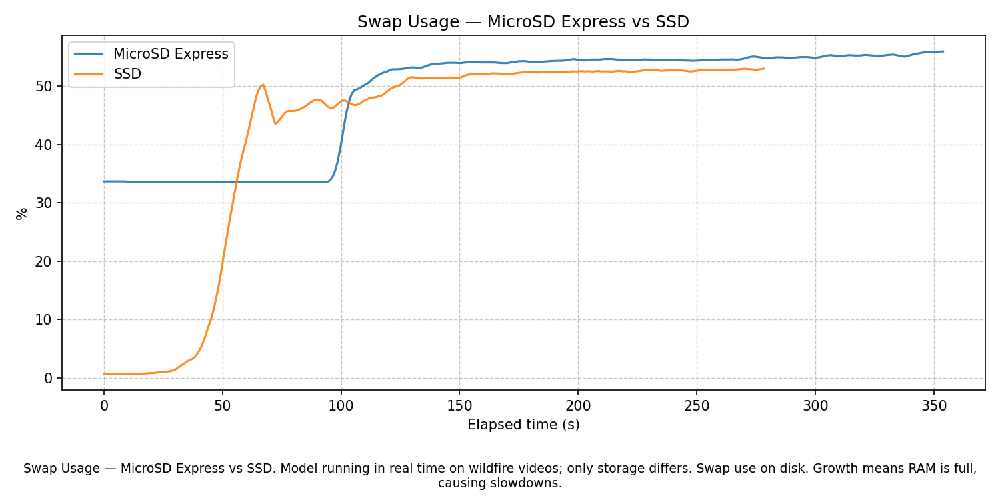

Camera
Captures the monitored outdoor scene.
Project Information
Technical overview, reported evaluation metrics, and storage-focused SD Express challenge summary.

Real-Time Edge Wildfire Detection System
The system detects wildfire and smoke events from a live camera stream on an NVIDIA Jetson Orin Nano. A vision-language model describes the scene, a semantic text classifier decides whether the description indicates wildfire or smoke, and the system can trigger alerts and save recent video as evidence for human verification.
Captures the monitored outdoor scene.
Samples frames and generates text descriptions.
Sends short low-latency text messages between services.
Classifies the VLM text using a semantic MNLI model.
Reduces false alerts by requiring repeated wildfire decisions.
Stores recent video so the system can save the seconds around an event.


device=-1Affordable, scalable, and provides visual evidence for human verification.
Early fire may appear as smoke, glow, haze, distant flame, or scene context rather than a clean object. A VLM gives a semantic scene description.
The VLM output is text. MNLI lets the classifier compare that text with wildfire/no-wildfire hypotheses without training a custom classifier from scratch.
Messages are short and time-sensitive. A fresh scene description is more useful than a delayed reliable backlog.
The VLM, classifier, and monitoring tools can be developed, tested, and replaced separately.
The system handles inference plus logs, rolling buffers, evidence clips, and swap. Slow storage may create delays or instability.
The reported evaluation summaries prioritize recall and false-negative reduction, because missing a real wildfire is more dangerous than sending a false alert for human verification.
37 tagged wildfire videos and 37 tagged no-wildfire videos. The set included edge cases such as fog, nighttime, smoke-only scenes, distant fire, sunset/sunrise, and confusing visual conditions.
T = 0.32, chosen to prioritize minimizing false negatives. For wildfire detection, recall is treated as the critical metric.
The metrics below are presented as reported evaluation metrics. They should be rechecked against the final conference report before publication.
A smaller presentation test split reported 92.8% accuracy, 100% recall, and 0% FNR. The consistent point across the reported summaries is the priority on high recall and avoiding missed fire cases.
Fog may be semantically close to smoke. Mitigation: add stronger fog and no-fire semantic labels.
A VLM can occasionally produce a false fire sentence. Mitigation: require repeated WILDFIRE classifications in a time window.
A real fire sentence may split probability across fire, smoke, and burning labels. Mitigation: aggregate over the full fire-label list instead of relying only on the maximum single label.
Real-Time Wildfire Detection
The SD Express challenge report focused on showing how fast removable storage can support a real-time edge AI workload.
The storage device supports rolling video buffers, evidence clips, logs, model/runtime data, and an 8 GB swap file due to limited Jetson RAM.
The system was tested on recorded wildfire footage and live camera input using a Jetson Orin Nano, Dockerized VLM and classifier services, and semantic wildfire/no-wildfire decisions.
The report says microSD Express performed comparably to SSD under the tested workload and helped sustain real-time detection workloads without making storage the bottleneck.

Why this graph is shown: It evaluates whether storage read speed becomes a bottleneck while the edge-AI pipeline is running.
What it means: The x-axis is elapsed time in seconds, and the y-axis is read throughput in MB/s. The two lines compare MicroSD Express and SSD under the same workload style.
Conclusion: Under this tested workload, read activity is bursty rather than constant. MicroSD Express shows enough throughput headroom for the observed bursts, though final deployment should be verified with the exact camera and model settings.

Why this graph is shown: It shows how much the Jetson relies on disk-backed swap while running the workload.
What it means: The x-axis is elapsed time in seconds, and the y-axis is swap usage percentage. Rising swap means RAM pressure is being absorbed by storage.
Conclusion: Swap use increases during the run, so fast storage is relevant for stability. The result supports using fast removable storage for constrained edge AI workloads.
PDF copied from the current Materials folder.
The current project presentation is available for download.
Download Project Presentation